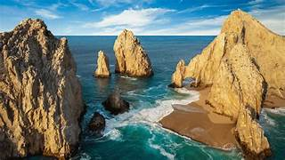
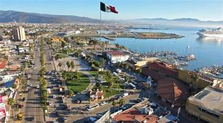
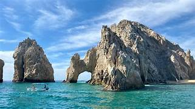
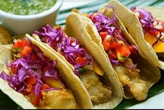

Baja California, un estado que se extiende a lo largo de la península del mismo nombre en el extremo noroeste de México, es un territorio de contrastes y paisajes impresionantes. Sus playas doradas, sus sierras escarpadas, sus desiertos áridos y sus oasis escondidos lo convierten en un destino único para los amantes de la naturaleza y la aventura.

Ensenada, una de las ciudades más grandes de Baja California, es conocida por su floreciente industria vinícola. La región cuenta con numerosas bodegas que producen vinos de alta calidad, especialmente vinos tintos como el Cabernet Sauvignon y el Tempranillo. La Ruta del Vino es una atracción turística popular que permite a los visitantes degustar vinos, disfrutar de la gastronomía local y explorar los hermosos paisajes de los viñedos.

Baja California es un destino turístico popular tanto para turistas nacionales como internacionales. La región ofrece una amplia gama de actividades, que van desde relajarse en sus playas de aguas cristalinas hasta practicar deportes acuáticos como el buceo, el surf y la pesca deportiva. Además, sus parques naturales, como el Parque Nacional Sierra de San Pedro Mártir y el Parque Nacional Constitución de 1857, son ideales para realizar actividades de ecoturismo, como senderismo, observación de aves y camping.

Entre los platillos más emblemáticos de Baja California se encuentran: La tostada de ceviche: Un clásico de la cocina bajacaliforniana, elaborado con pescado fresco marinado en jugo de limón, cebolla, cilantro y chiles. La langosta al carbón: Un manjar de Baja California, cocinado a las brasas con mantequilla, ajo y especias. Los tacos de pescado: Una opción deliciosa y versátil, que se puede preparar con diferentes tipos de pescado y aderezos. La Ensalada César: Un platillo icónico que se originó en Tijuana, con lechuga romana, crutones, queso parmesano, huevo cocido y aderezo César. La burrita de machaca: Un platillo típico de Baja California Sur, elaborado con carne de res seca y deshebrada, chiles, cebolla y especias.

Notas relevantes:
Baja California es el estado más largo de México.
En Baja California se encuentra
la ciudad de Tijuana, la cual es la frontera más transitada del mundo entre México y Estados Unidos.
Baja
California es el hogar de la ballena gris, la cual migra cada año desde el Ártico hasta las costas del Pacífico
mexicano.